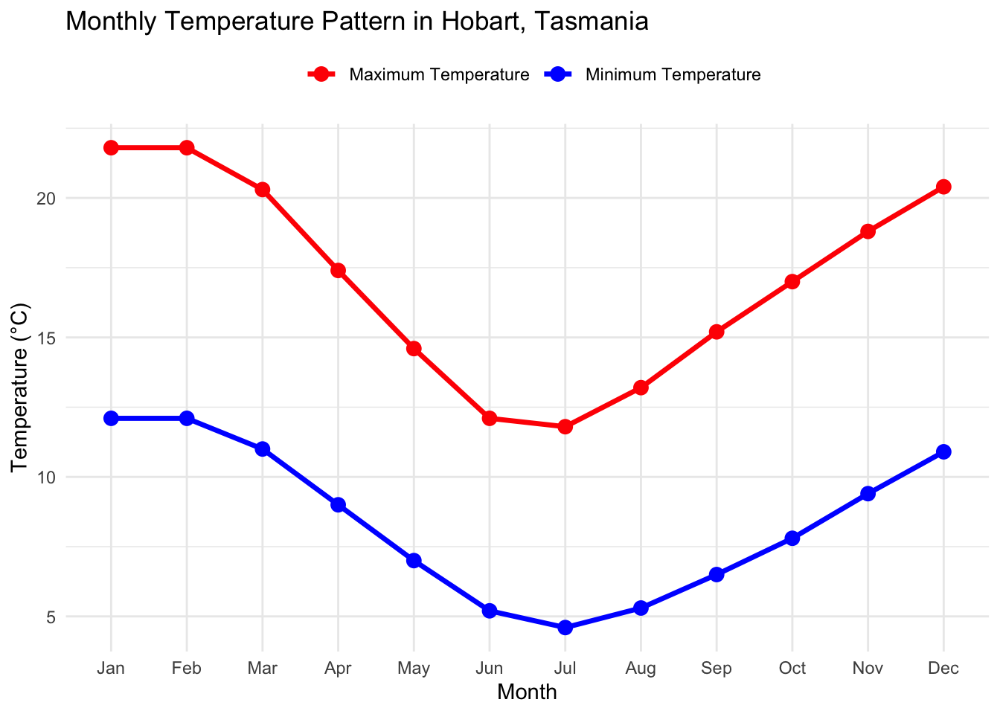
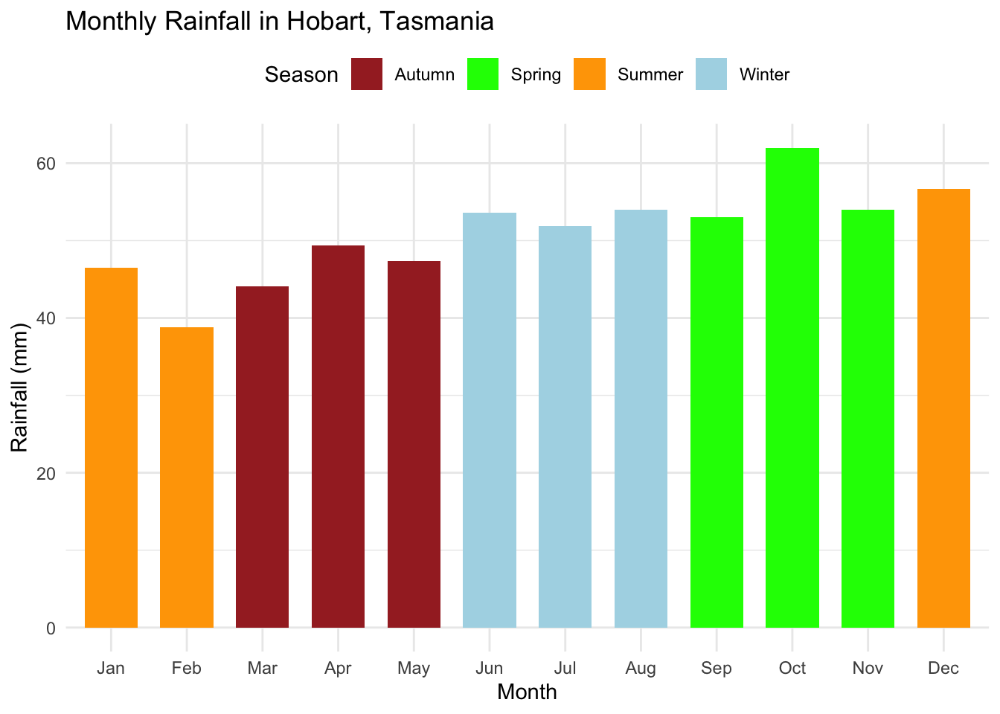

Tasmania, located south of the Australian mainland, is renowned for its diverse natural landscapes and variable weather conditions. Understanding its climate characteristics is crucial for determining the best time to visit and planning outdoor activities. Compared to other parts of Australia, Tasmania generally exhibits a temperate oceanic climate, with relatively mild temperatures, but significant variations in rainfall and sunshine across different seasons.
This analysis aims to systematically explore the main climatic features of Tasmania, including temperature ranges, rainfall patterns, and seasonal variations in sunshine hours. Through a comparison of different seasons, the analysis will address questions such as the intensity of summer heat, the severity of winter cold, the wettest season, and the sunniest periods, and further provide practical guidance for tourists regarding the best time to travel, clothing recommendations, and suitable times for outdoor activities.
leaflet() %>%addTiles() %>%setView(lng =147.33, lat =-42.89, zoom =10) %>%addMarkers(lng =147.33, lat =-42.89,popup ="<strong>Hobart Weather Station</strong><br> Station #094029<br> Hobart (Ellerslie Road)<br> Elevation: 51m<br> Coordinates: 42.89°S, 147.33°E" ) %>%addCircleMarkers(lng =147.33,lat =-42.89,radius =15,color ="red",fillColor ="red",fillOpacity =0.3,popup ="Weather Station Location" )
Street Map: Presents the weather station location using a detailed street basemap. Users may click on the marker to view station-specific information, including geographic coordinates, elevation, and station identification number.
Map 2:
leaflet() %>%addProviderTiles(providers$Esri.WorldImagery) %>%# 卫星图setView(lng =147.33, lat =-42.89, zoom =10) %>%addMarkers(lng =147.33, lat =-42.89,popup ="Hobart Weather Station" )
Satellite Map: Displays high-resolution aerial imagery of the Hobart region, providing geographic and environmental context for the weather station location.
cat("Annual Temperature Range:", round(annual_range, 1), "°C\n")
Annual Temperature Range: 17.2 °C
Key Findings:
Overall, Tasmania has a moderate climate, with an annual mean temperature of approximately 12.7 °C (54.86°F ). The temperature range is relatively small (around 17.2 °C/62.96°F) compared to continental regions, indicating limited seasonal variation. As a result, extreme temperatures are rare: summers are generally mild, while winters are cool rather than cold. This stable temperature pattern is largely influenced by the surrounding ocean, which moderates temperatures throughout the year.
Monthly Temperature Visualization
ggplot(climate_data, aes(x = month)) +geom_line(aes(y = max_temp, group =1, color ="Maximum Temperature"), size =1.2) +geom_point(aes(y = max_temp, color ="Maximum Temperature"), size =3) +geom_line(aes(y = min_temp, group =1, color ="Minimum Temperature"), size =1.2) +geom_point(aes(y = min_temp, color ="Minimum Temperature"), size =3) +scale_color_manual(values =c("Maximum Temperature"="red", "Minimum Temperature"="blue")) +labs(title ="Monthly Temperature Pattern in Hobart, Tasmania",x ="Month",y ="Temperature (°C)",color ="" ) +theme_minimal() +theme(legend.position ="top")
Warning: Using `size` aesthetic for lines was deprecated in ggplot2 3.4.0.
ℹ Please use `linewidth` instead.

Key Findings:
The temperature graph reveals a typical temperate oceanic climate pattern, characterized by warm summers (January-February, with a maximum temperature of ~22°C/71.6°F ) and cool winters (July, with a maximum temperature of ~12°C/53.6°F). The smooth seasonal transition and moderate temperature range (~10°C/50°F difference between maximum and minimum) throughout the year reflect the moderating influence of the surrounding ocean, with no extreme temperatures occurring in any season.
Seasonal Temperature Comparison
seasonal_temp <- climate_data %>%group_by(season) %>%summarise(avg_max =mean(max_temp),avg_min =mean(min_temp),.groups ='drop' ) %>%mutate(season =factor(season, levels =c("Summer", "Autumn", "Winter", "Spring")))kable(seasonal_temp, digits =1, col.names =c("Season", "Avg Max (°C)", "Avg Min (°C)"),caption ="Seasonal Temperature Averages")
Warning: 'xfun::attr()' is deprecated.
Use 'xfun::attr2()' instead.
See help("Deprecated")
Warning: 'xfun::attr()' is deprecated.
Use 'xfun::attr2()' instead.
See help("Deprecated")
Tasmania receives an average annual rainfall of approximately 611 millimeters, with rainfall distributed fairly evenly throughout the year. There is no distinct dry season in the region, as each month receives at least approximately 38 millimeters of rainfall. Rainfall is slightly higher during spring (September to November), but the differences between seasons are not significant. Overall, monthly rainfall variations are relatively small, indicating a consistently humid climate throughout the year.
Monthly Rainfall Visualization
ggplot(climate_data, aes(x = month, y = rainfall, fill = season)) +# Add barsgeom_col(width =0.7) +# Set colors for each seasonscale_fill_manual(values =c("Summer"="orange","Autumn"="brown","Winter"="lightblue","Spring"="green" )) +# Add labelslabs(title ="Monthly Rainfall in Hobart, Tasmania",x ="Month",y ="Rainfall (mm)",fill ="Season" ) +theme_minimal() +theme(legend.position ="top")

Key Findings:
The bar chart shows the average monthly rainfall in Hobart, Tasmania, highlighting a relatively consistent precipitation pattern throughout the year. Hobart has an oceanic climate and is one of Australia’s driest capital cities. Overall, the city receives rain fairly evenly across all months, with annual rainfall averaging around 626 mm.
Rainfall is slightly higher during the winter and spring months, particularly from July to October, with August generally being the wettest month, averaging between 50–60 mm. In contrast, the summer months of January and February tend to be the driest.
Note: Different colors in this bar chart represent different seasons. (Summer: Orange, Autumn: Dark Red, Winter: Light Blue, Spring: Green)
Warning: 'xfun::attr()' is deprecated.
Use 'xfun::attr2()' instead.
See help("Deprecated")
Warning: 'xfun::attr()' is deprecated.
Use 'xfun::attr2()' instead.
See help("Deprecated")
On average, Tasmania receives about 5.9 hours of sunshine per day, but there is a strong seasonal variation. Summer days are much longer, with roughly twice as much sunshine as in winter, providing ideal conditions for outdoor activities. In contrast, winter has limited daylight hours, which may restrict time for outdoor pursuits.
The chart shows the average daily sunshine hours in Hobart, Tasmania throughout the year, exhibiting typical Southern Hemisphere seasonal variations. Sunshine hours are highest during the summer months (December to February), averaging approximately 8 to 8.5 hours in January, reflecting the longer daylight hours and more direct sunlight during the Southern Hemisphere summer solstice. As autumn (March to May) arrives, sunshine gradually decreases, reaching its lowest point in winter (June to July), with only about 4 to 4.5 hours of sunshine in June, corresponding to the shortest days of the year. Overall, the sunshine variation shows a stable annual cycle, primarily influenced by the changes in day length due to latitude, while local weather and cloud cover also have some impact on the actual sunshine duration.
Conclusion:
Tasmania has a temperate oceanic climate, characterized by moderate temperatures, consistent year-round rainfall, and clear seasonal patterns in sunshine. Summers are mild and sunny, with temperatures ranging from 20 to 22°C and long daylight hours, while winters are cool but not severely cold, with limited sunshine. Rainfall is evenly distributed throughout the year, and there are no extreme weather events, making Tasmania accessible year-round. Overall, the climate is stable and pleasant, with the ocean playing a key role in moderating temperatures.
For visitors, the best time to travel is during the summer months of December to February, when temperatures are warmest, sunshine is longest, and outdoor activities can be comfortably enjoyed. Spring (September to November) offers blooming wildflowers but slightly higher rainfall, while autumn (March to May) provides milder weather and fewer crowds. Winter (June to August) is cooler and less sunny, suitable for those interested in winter-specific activities. Travelers should prepare light, breathable clothing for summer, layering options for spring and autumn, and warmer attire for winter. The long summer days are ideal for sightseeing, hiking, and other outdoor activities, whereas winter activities may need to be planned around shorter daylight hours and cooler conditions.